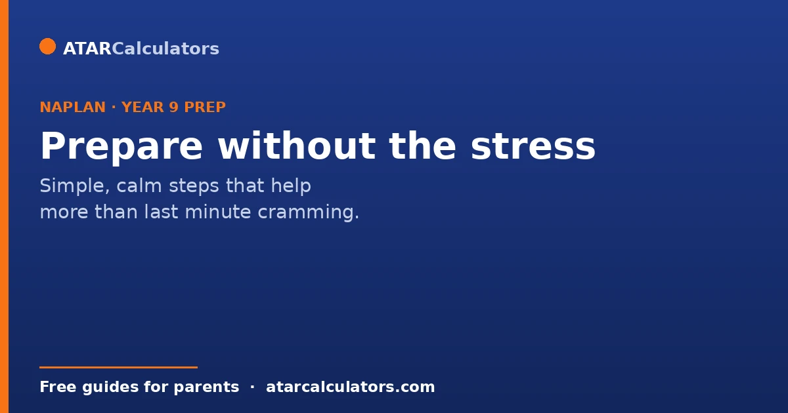
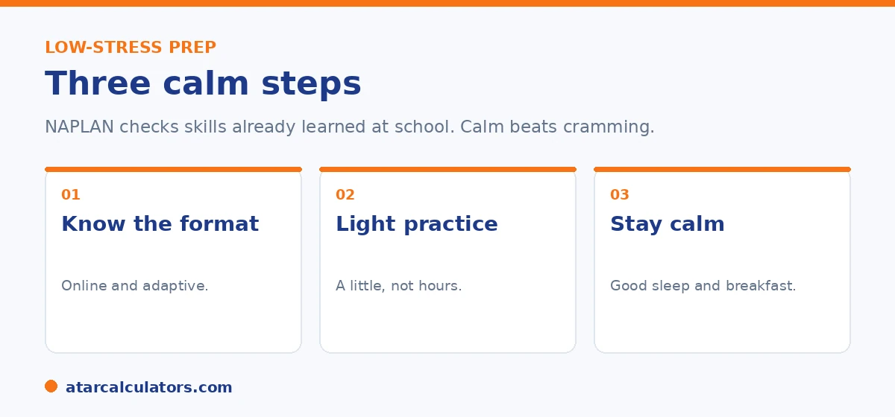

Here is the short version. You do not need to cram for Year 9 NAPLAN. It checks reading, writing and numeracy skills your child already learns at school. The best preparation is light and calm. Make sure your child knows the test is online and adaptive, do a little familiar practice, and focus on good sleep and a calm mood. Pressure lowers performance. So keep it low.
When Year 9 NAPLAN comes up, many parents wonder how much to prepare. The honest answer is, not much. NAPLAN checks skills built over years, not facts you can cram.
That said, a little calm preparation helps your child feel ready. Below are simple steps. To see where your child sits now, use our Year 9 NAPLAN calculator.
Key takeaways
- You do not need to cram. NAPLAN checks skills already learned.
- Make sure your child knows the test is online and adaptive.
- A little familiar practice helps. Hours of drilling do not.
- Good sleep and a calm mood matter on the day.
- Keep pressure low. Stress lowers performance.
- This is not the HSC test. That is separate, and later.
Should you prepare at all?
A little, yes, but not much. NAPLAN checks reading, writing and numeracy skills your child has built up over years at school. You cannot cram those in a week, and trying to only adds stress.

The goal of preparation is not to teach new skills in a rush. It is to help your child feel calm and know what to expect. That is what makes the difference on the day.
Know the online format
At Year 9, the whole test is online, and it is adaptive. That means the questions adjust as your child answers. If they get questions right, the next ones can get harder. This is normal and is not a sign of trouble.
Make sure your child knows this in advance, so harder questions do not throw them. There are official demonstration tests online that show the format. A quick look removes most of the surprise.
Light, familiar practice
A little practice in the weaker area helps, as long as it stays light. For reading, read together and talk about the text. For writing, write a short piece and talk about ideas and structure. For numeracy, use everyday maths like time, money and cooking.
Keep sessions short and low key. Twenty calm minutes is worth more than two stressful hours. If you want to know which area to focus on, your child's last report is the best guide. See our guide to reading the report.
Want to see your child's current Year 9 level?
Open the Year 9 NAPLAN calculator →The day before and the day of
The simplest things help most here. A good night's sleep, a normal breakfast, and a calm morning set your child up far better than last minute revision.
Avoid talking the test up as a big event. Treat it as an ordinary school day. A relaxed child thinks more clearly and shows what they can really do.
What not to do
A few things backfire. Do not cram in the final days, since skills do not build that fast. Do not pile on pressure or warn that NAPLAN is high stakes. Do not compare your child to others. All of these raise stress and lower performance.
One more thing worth saying in NSW. This is not the HSC test. The HSC minimum standard is met separately, through online tests in Years 10 to 12, so Year 9 NAPLAN is not the high-stakes moment some people imagine.
It is worth being clear about why the calm approach genuinely produces better results. This is because it can feel counterintuitive to do less. NAPLAN measures skills, reading, writing and numeracy, that build slowly over years of ordinary schooling. So there is no store of last-minute content that cramming can add. A stressed child sitting up late in the final week gains nothing and arrives tired. Pressure is actively counterproductive here. Anxiety narrows attention and working memory, which are exactly the resources the test draws on. So a child told that everything rides on NAPLAN often underperforms relative to their true ability. Comparison with siblings or classmates has the same effect and adds nothing useful. This is because the result is about your child's own progress, not a race. The genuinely helpful preparation is light and familiar. Make sure your child has seen the online format, so it holds no surprises. Add a few relaxed practice questions to build confidence rather than drill. Then a good night's sleep, and breakfast on the day. Framed as just another school activity rather than a test of their worth, most children do their honest best. That is the whole point. Reserve your energy for supporting steady learning across the year, not for a sprint in the last week.
Sleep, food and calm matter most
For a teenager, the basics do more than cramming. A good night's sleep, a proper breakfast, and a calm morning help far more than a last-minute practice test.
So in the days before, keep routines steady and stress low. A rested, relaxed student performs closer to their real ability than a tired, anxious one.
Balancing prep with normal schoolwork
Do not let NAPLAN preparation crowd out ordinary learning. The best preparation for Year 9 NAPLAN is simply keeping up with school and reading widely through the year.
So a little familiarity with the online format is plenty. Beyond that, your child's normal class work is doing the real work already.
What realistic preparation looks like
Realistic preparation for Year 9 NAPLAN is light. Have your child try a few official practice questions so the online format is familiar. Beyond that, normal schoolwork and wide reading are the real preparation.
There is no benefit in heavy drilling, which tends to raise stress without raising results much. So keep it simple: a little familiarity with the format, steady schoolwork, and a calm, rested student on the day.
Common questions
Should you study for NAPLAN?
Only lightly. NAPLAN checks skills your child has built over years at school, so you cannot cram them. A little familiar practice and a calm mood help more than heavy study.
How should a Year 9 student prepare for NAPLAN?
Make sure they know the test is online and adaptive, do a little light practice in the weaker area, and focus on good sleep and a calm morning. Keep it low pressure.
Do practice papers help?
A little. Looking at an official demonstration test removes surprise about the online format. Heavy drilling on practice papers adds stress without building skills as well as regular reading and everyday maths.
How do I reduce NAPLAN stress?
Treat the test as an ordinary school day, avoid talking it up as high stakes, and keep routines calm. Remind your child it is just a check, not a make-or-break exam.
How do I prepare for the online format?
Show your child an official demonstration test so they know what to expect, including that the questions adjust as they answer. Familiarity with the format is the main thing.
Does Year 9 NAPLAN really matter?
It is a useful progress check, but it does not decide the HSC or the ATAR. The HSC minimum standard is met separately in Years 10 to 12, so Year 9 NAPLAN is not high stakes.
See your child's Year 9 level
Enter Year 9 reading and numeracy scores to see the indicative level. Free, and no signup.
Open the Year 9 NAPLAN calculator →Related guides
This guide is general information for parents, not formal advice. HSC and NAPLAN rules can change. So always confirm the current HSC minimum standard with NESA, and check NAPLAN details at the National Assessment Program site. Reviewed by the ATARCalculators Editorial Team.